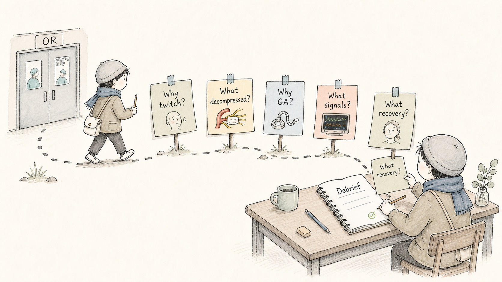
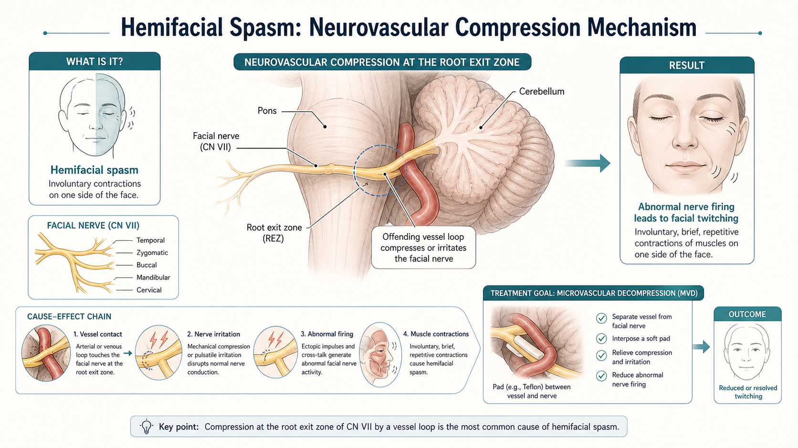
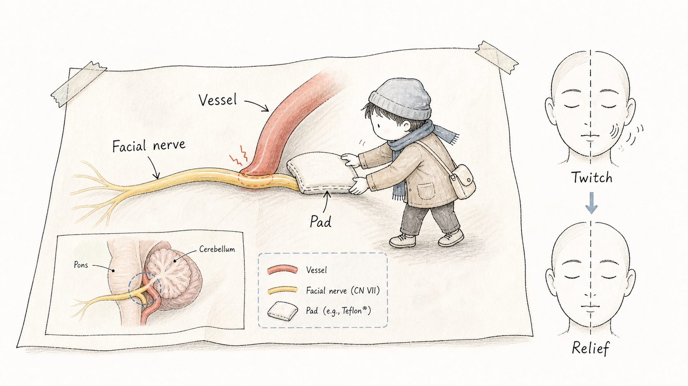
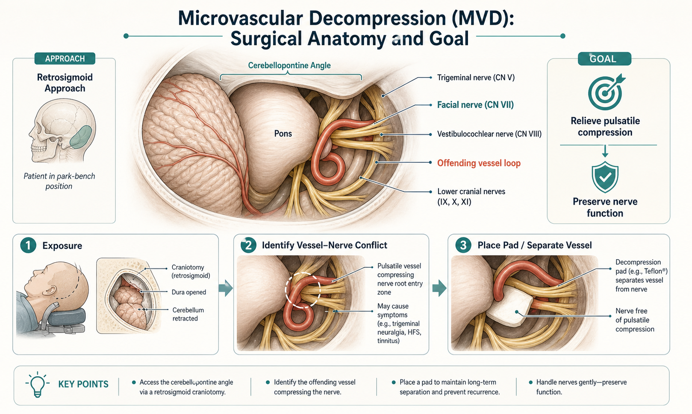
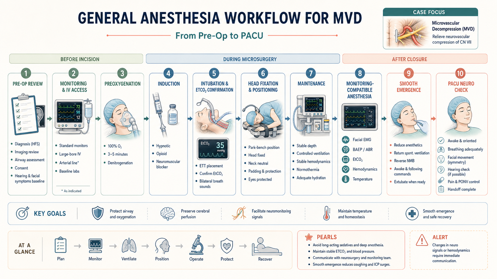
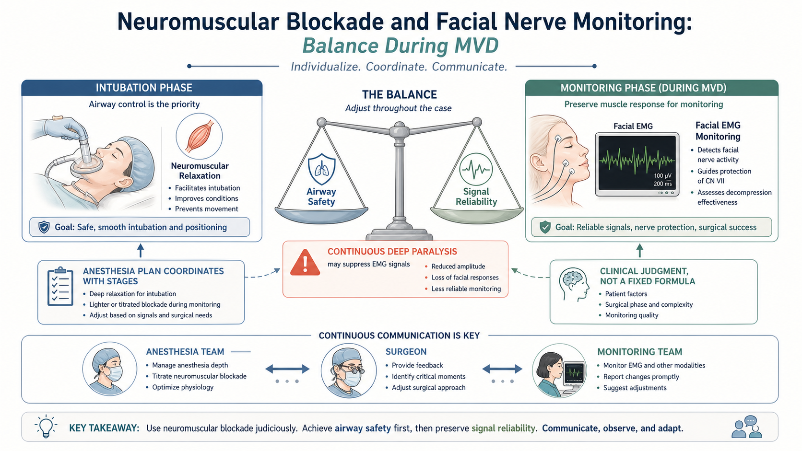
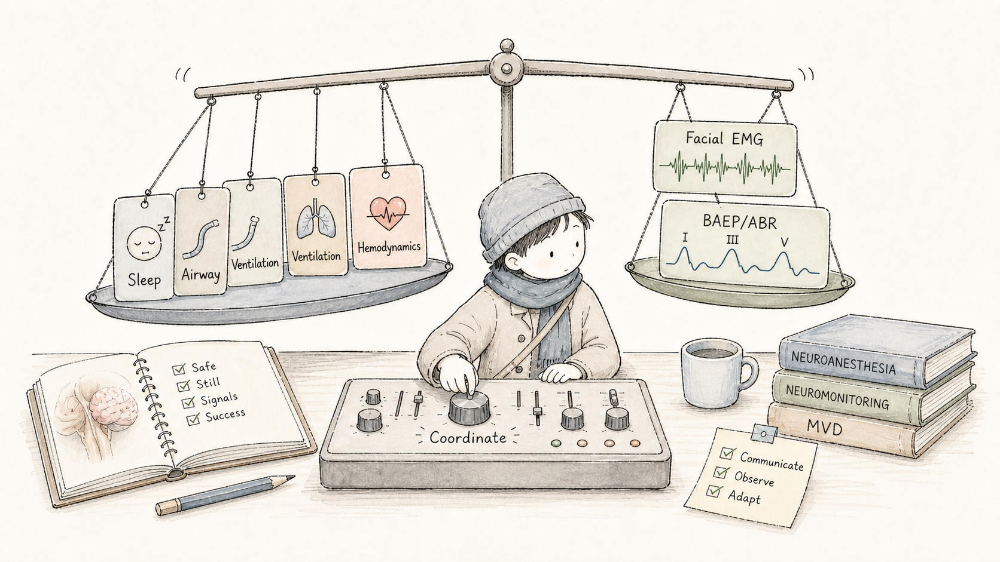
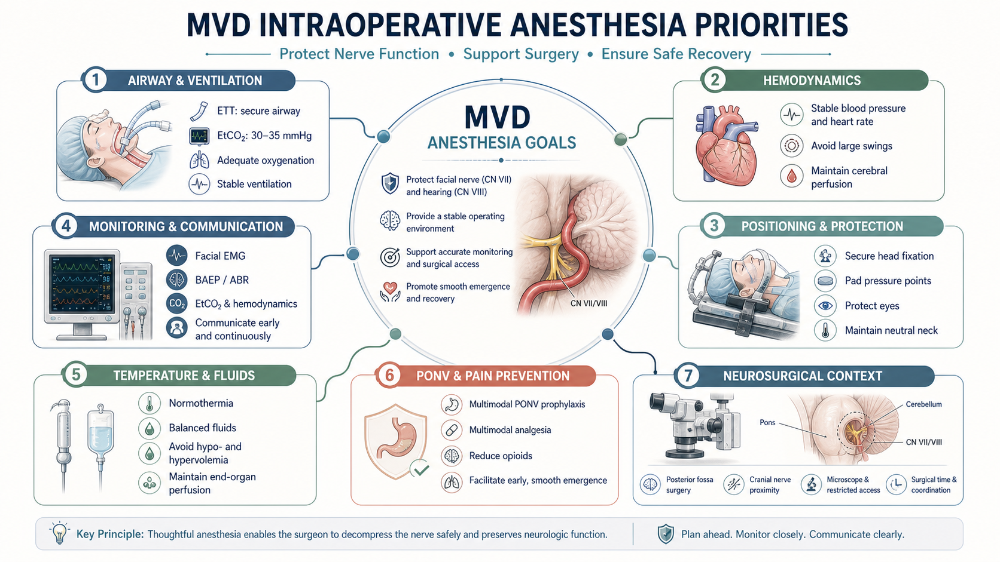

Case Map
今日病例：从“脸抽动”看到“颅神经保护”Today's Case: From Facial Twitching to Cranial Nerve Protection
学生今天要看懂什么What the student should understand
这台手术不是简单地“把血管拿开”。对麻醉见习来说，更重要的是理解：患者为什么需要稳定全麻，为什么神经监测会影响麻醉用药，为什么苏醒时要特别平稳。
This case is not just moving a vessel away. For anesthesia observation, the key is understanding why stable general anesthesia is needed, why monitoring affects anesthetic choices, and why emergence must be smooth.

Disease Mechanism
面肌痉挛：面神经被“持续敲门”Hemifacial Spasm: The Facial Nerve Is Being Irritated
面肌痉挛通常表现为一侧面部不自主抽动。一个常见机制是面神经在脑干附近受到血管压迫或刺激，异常放电传到面部肌肉，形成反复抽动。
Hemifacial spasm often presents as involuntary contractions on one side of the face. A common mechanism is vascular compression or irritation of the facial nerve near the brainstem, leading to abnormal firing and facial muscle twitching.


Surgical Goal
MVD 做什么：解除压迫，而不是切断神经What MVD Does: Relieve Compression, Not Cut the Nerve
微血管减压术的核心是找到压迫面神经的责任血管，将血管从神经上移开，并用软垫把两者隔开。对学生来说，最重要的一句话是：手术目标是解除“血管-神经冲突”，同时保护面神经和听神经等邻近结构。
The core of MVD is identifying the offending vessel, moving it away from the facial nerve, and placing a soft pad between vessel and nerve. The key teaching line is: relieve the vessel-nerve conflict while protecting the facial nerve and nearby structures such as CN VIII.

Why General Anesthesia
为什么需要全身麻醉气管插管Why General Anesthesia with Endotracheal Intubation
这类后颅窝显微手术需要患者完全静止、头部固定、气道可靠、通气稳定，并且要为神经监测创造条件。全麻气管插管让麻醉医生能控制氧合、通气和二氧化碳，同时维持合适麻醉深度。
Posterior fossa microsurgery requires immobility, head fixation, a secure airway, stable ventilation, and conditions suitable for nerve monitoring. General anesthesia with an endotracheal tube allows control of oxygenation, ventilation, carbon dioxide, and anesthetic depth.

Neurophysiological Monitoring
神经监测：手术团队的“早期报警系统”Neurophysiological Monitoring: The Team's Early Warning System
在 MVD 中，术中神经电生理监测帮助团队观察面神经和听觉通路相关信号。对初学者不必讲太深，只要知道：面肌肌电 `Facial EMG` 反映面神经相关肌肉活动；`BAEP/ABR` 用于观察听觉通路；信号质量会受麻醉、肌松、体温、灌注和团队沟通影响。
During MVD, intraoperative neurophysiological monitoring helps the team observe facial nerve and auditory pathway signals. For a beginner: Facial EMG reflects facial nerve-related muscle activity; BAEP/ABR observes auditory pathway function; signal quality can be affected by anesthesia, neuromuscular blockade, temperature, perfusion, and team communication.

Anesthesia-Monitoring Balance
麻醉难点：既要安全插管，也要保留监测信号The Anesthesia Challenge: Secure the Airway, Preserve Useful Signals
插管时常需要肌松，但面神经肌电监测需要肌肉反应可以被观察到。持续过深肌松可能让 EMG 信号不可靠。因此，这台手术很适合给学生讲“麻醉不是固定配方，而是和手术阶段、监测团队持续协调”。
Intubation often needs neuromuscular relaxation, but facial EMG monitoring requires detectable muscle responses. Continuous deep paralysis can reduce signal reliability. This case is ideal for teaching that anesthesia is not a fixed recipe; it is coordinated with surgical stages and the monitoring team.


Intraoperative Priorities
术中麻醉关注点：显微手术里的稳定工程Intraoperative Priorities: Stability During Microsurgery
术中重点包括气道和通气、血流动力学、体位和压力点、眼保护、体温、液体、疼痛和恶心呕吐预防、神经监测沟通。学生可以把麻醉医生理解为“同时看多个系统反馈的人”。
Intraoperative priorities include airway and ventilation, hemodynamics, positioning and pressure points, eye protection, temperature, fluids, pain and PONV prevention, and communication around monitoring. The student can view the anesthesiologist as the person integrating multiple system feedback loops.

Observer Mode
学生现场观察清单Student Observation Checklist
Debrief
术后五问：把一次见习变成麻醉思维Five Post-Case Questions: Turn Observation into Anesthesia Reasoning
每台手术后用 2 分钟回答五个问题：为什么会面肌痉挛？MVD 解除的是什么冲突？为什么需要全麻插管？神经监测需要麻醉配合什么？苏醒后最先观察什么？
After the case, answer five questions in two minutes: Why does HFS happen? What conflict does MVD relieve? Why is GA with ETT useful? What does monitoring need from anesthesia? What should be checked first after emergence?